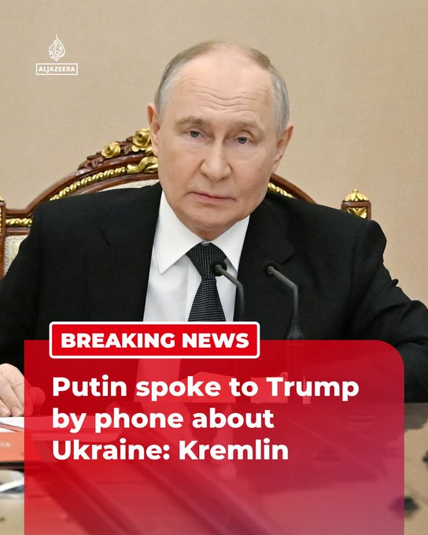

@AJENews
📝 原文: BREAKING: US President Donald Trump offered help to end the war in Ukraine during a 90-minute call with Russian President Vladimir Putin, Kremlin aide Yuri Ushakov says.
Trump said envoys Steve Witkoff and Jared Kushner would continue talks.More onhttp://Aljazeera.com
🇨🇳 译文: 突发新闻：克里姆林宫助手尤里·乌沙科夫表示，美国总统唐纳德·特朗普在与俄罗斯总统弗拉基米尔·普京的 90 分钟通话中表示愿意帮助结束乌克兰战争。
特朗普表示特使史蒂夫·威特科夫和贾里德·库什纳将继续会谈。更多信息请访问http://Aljazeera.com


🕒 2026-07-04T22:15:00+00:00